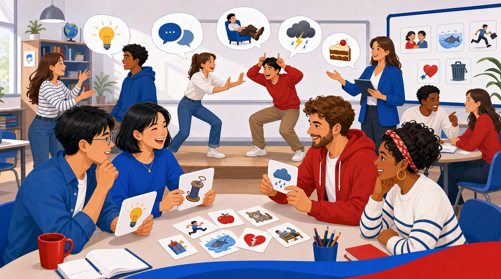

Basic English · Idioms
Speak Like a Local: Basic Idioms
Learn common idioms that beginners can understand and use in simple conversations. Each idiom opens on this page with meaning, usage, examples, a short dialogue, and a speaking prompt.

What is an idiom?
An idiom is a fixed expression whose meaning is different from the literal meaning of the words. This section focuses on real idioms, not greetings or simple classroom phrases, so students learn expressions that cannot be translated word by word.
Classroom tip: Students should first understand the meaning, then repeat the example sentence, and finally create one personal sentence. Idioms sound natural only when they are used in the right context.
Basic idioms
Select an idiom from the list. Each one has a figurative meaning, a natural context, and a short speaking prompt that opens on the right without leaving the page.